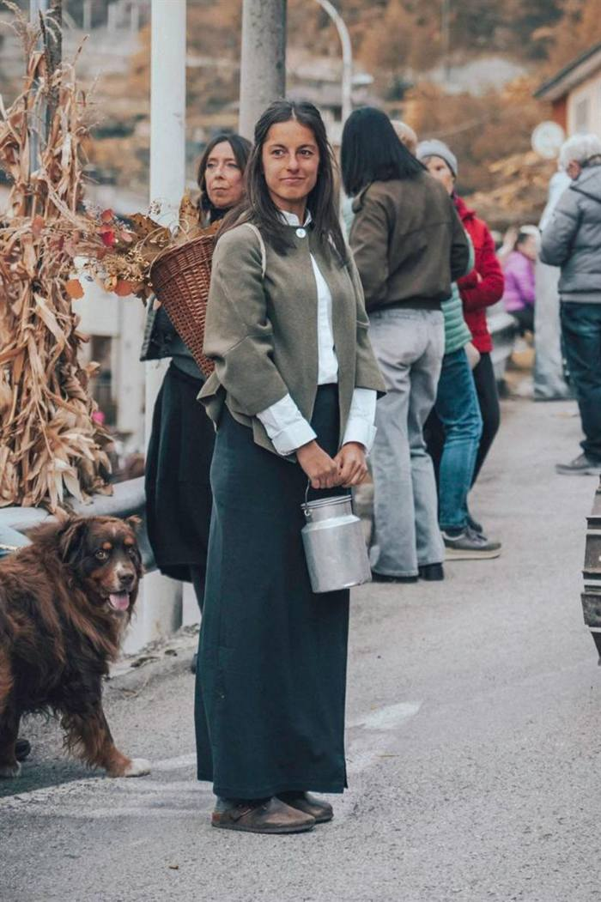

Chi siamo
La Loch Società Agricola nasce a Pedemonte, un piccolo comune situato nella Valle dell'Astico, tra Veneto e Trentino. Ci occupiamo di apicoltura, coltivazione di zafferano, erbe aromatiche, patate, orzo da birra e frumento.
Amministrazione
Chiara Carotta
